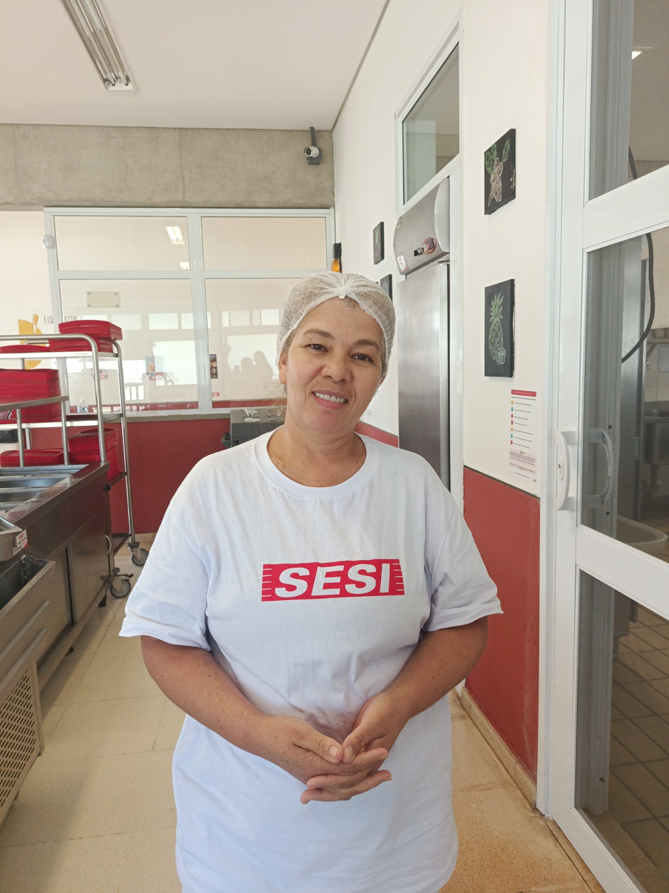
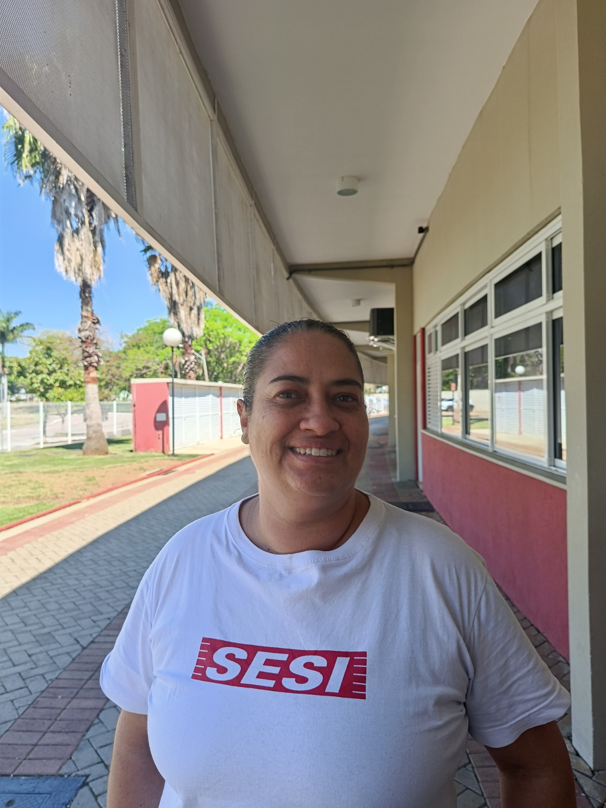

"Produzimos a base nutritiva para que os alunos tenham energia durante todo o dia."
Clique para ler a entrevista completa
Sou natural da Bahia e moro em Vinhedo há 8 anos. Na Bahia eu já atuava como merendeira e sou técnica em alimentação escolar. Quando mudei para cá, trabalhei durante anos numa fábrica de massas onde passei de maceira a analista de qualidade. Entrar para o time do SESI como auxiliar de cozinha foi uma conquista imensa na minha vida.
O que eu mais gosto no meu trabalho é servir vocês e trazer esse cuidado diário. Nosso setor é fundamental porque preparamos a refeição nutritiva que dá energia para os estudantes realizarem suas atividades. Minhas inspirações dentro da escola são a professora e a nutricionista Juliane.
Meu conselho para todos os estudantes é: sejam atenciosos, educados e prestativos com todas as pessoas que estão servindo vocês na escola. Um bom dia e um gesto de atenção transformam o dia de qualquer trabalhador.

"Mantenho a alimentação em dia para que todos fiquem bem e estudem bastante."
Clique para ler a entrevista completa
Minha trajetória profissional começou no setor bancário, passou pela contabilidade e por 25 anos atuei numa empresa funerária antes de ingressar na cozinha da escola. O que eu mais gosto no meu dia a dia de trabalho são as amizades e a convivência com os colegas e alunos.
Amo o contato com os jovens e poder compartilhar novas ideias no ambiente escolar. Na minha carreira aprendi que quando confiamos em nossa capacidade conseguimos superar qualquer desafio complexo. Minha maior inspiração de vida é minha mãe.
Para os estudantes do SESI deixo uma lição simples e valiosa: estudem, se dediquem e busquem conhecimento constantemente, pois isso é algo que ninguém pode tirar de vocês. Sejam sempre resilientes!